SPACE DEBRIS

SPACE DEBRIS
지금은 뉴스페이스 시대
블루오리진의 우주여행사업
민간우주산업, 지금은 뉴스페이스 시대
블루오리진의 우주여행사업
블루오리진은 지난해 7월20일 창업자 베이조스를 태우고 첫 유인비행에 성공한 이후 10월13일, 12월11일, 올해 3월31일과 이날까지 포함해 다섯차례에 걸쳐 모두 25명의 준궤도 우주여행객을 배출했다.
스페이스X의 위성 통신 사업, ‘스타링크'
민간우주산업, 지금은 뉴스페이스 시대
스페이스X의 위성 통신 사업, ‘스타링크'
민간 우주개발업체 스페이스X는 소형 인공위성 기반으로 데이터 통신용 네트워크를 구축하는 스타링크 프로젝트를 추진 중이다. 2019년 5월 첫 60기 발사를 시작으로 스타링크 위성을 순차적으로 발사하고 있으며, 거대한 12,000 개의 위성 별자리를 구축 할 계획이다. 2023년 5월 14일: 스타링크 5-9 (Starlink 5-9) 발사를 통해 현재 총 4,447개의 스타링크 위성을 보유하고 있다.
정부가 아닌 민간이 주도하는 새로운 우주산업 시대, 이른바 ‘뉴스페이스’ 시대에서는 로켓 발사 횟수가 급증하고 있다. 발사체와 위성 기술의 발전으로 비용 부담이 줄고 소형화가 가능해진 덕분이다.
인공 우주물체 발사수 증가추이
그렇다면,
발사된 인공우주물체의 잔해는
어떻게 되는가?